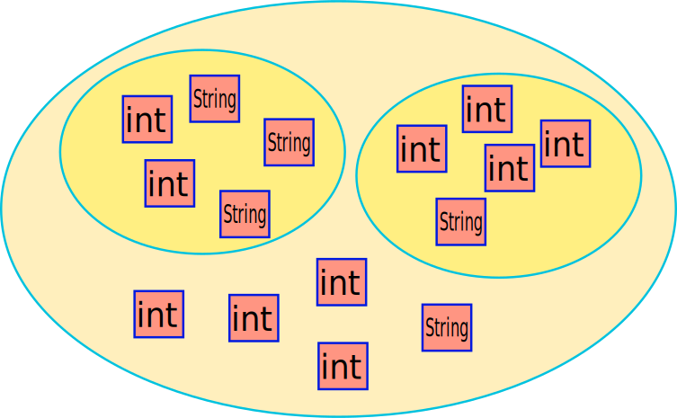

public class IndexProviderSubSolution extends java.lang.Object implements IndexProviderElement
| Constructor and Description |
|---|
IndexProviderSubSolution(java.util.List<java.util.List<IndexProviderElement>> _listElements)
Constructor
|
| Modifier and Type | Method and Description |
|---|---|
java.util.List<java.util.List<IndexProviderElement>> |
get_listElements() |
IndexProviderElement |
getElement() |
java.math.BigInteger |
getNumberOfElements()
Compute the number of different configurations possible
|
int |
getValue() |
boolean |
increment()
This function is used to increment the configuration of the indexes by one.
|
void |
init() |
void |
set_listElements(java.util.List<java.util.List<IndexProviderElement>> _listElements) |
void |
setValue(int v) |
java.lang.String |
toString() |
public IndexProviderSubSolution(java.util.List<java.util.List<IndexProviderElement>> _listElements)
_listElements - The first level list correspond to all subsolutions contained in the current level
of a solution. Here is an exemple :
public java.util.List<java.util.List<IndexProviderElement>> get_listElements()
public void set_listElements(java.util.List<java.util.List<IndexProviderElement>> _listElements)
public void init()
init in interface IndexProviderElementpublic int getValue()
getValue in interface IndexProviderElementpublic boolean increment()
increment in interface IndexProviderElementpublic IndexProviderElement getElement()
public java.lang.String toString()
toString in interface IndexProviderElementtoString in class java.lang.Objectpublic void setValue(int v)
setValue in interface IndexProviderElementpublic java.math.BigInteger getNumberOfElements()
getNumberOfElements in interface IndexProviderElement